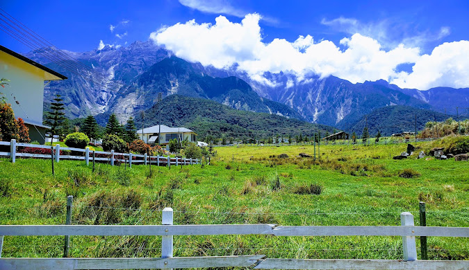
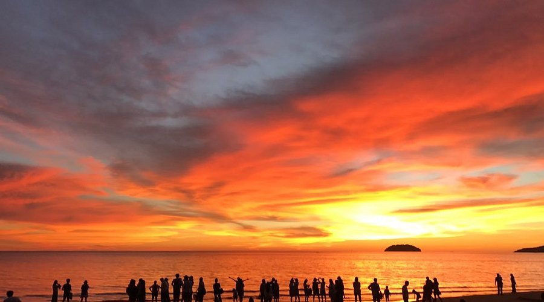

Kota Kinabalu (formerly known as Jesselton), colloquially referred to as KK, is the state capital of Sabah, Malaysia. It is also the capital of the Kota Kinabalu District as well as the West Coast Division of Sabah. The city is located on the northwest coast of Borneo facing the South China Sea.
Tell Me More!
Playfully known as the ‘Little New Zealand’ of Sabah, this place reminds you of Kiwi land’s famous dairy farms. The cooling air, foggy surroundings and highlands landscapes naturally make you feel as if you are somewhere overseas.

Taking its name from the casuarinas or aru trees that fringe the fine sands, this is where one might get a ringside seat to the greatest sunset on earth every evening when the crimson sun dips slowly into the horizon, leaving the vast skies a brilliant red.